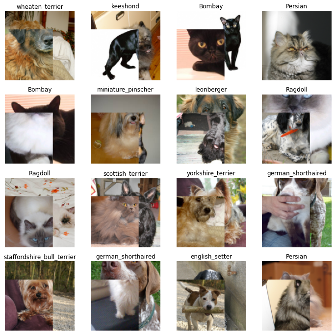
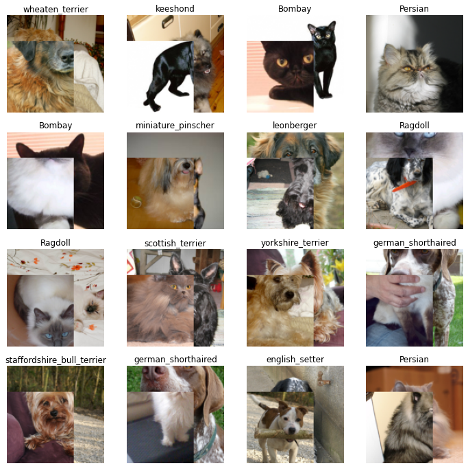
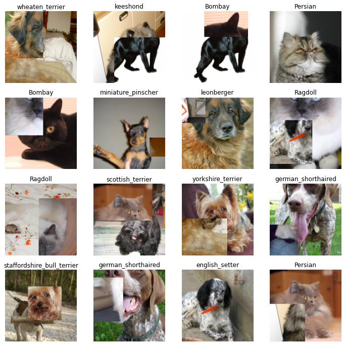
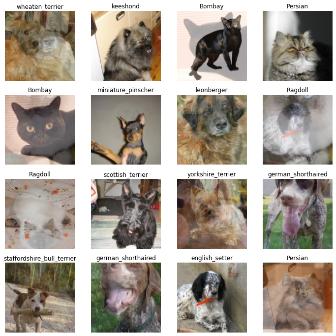
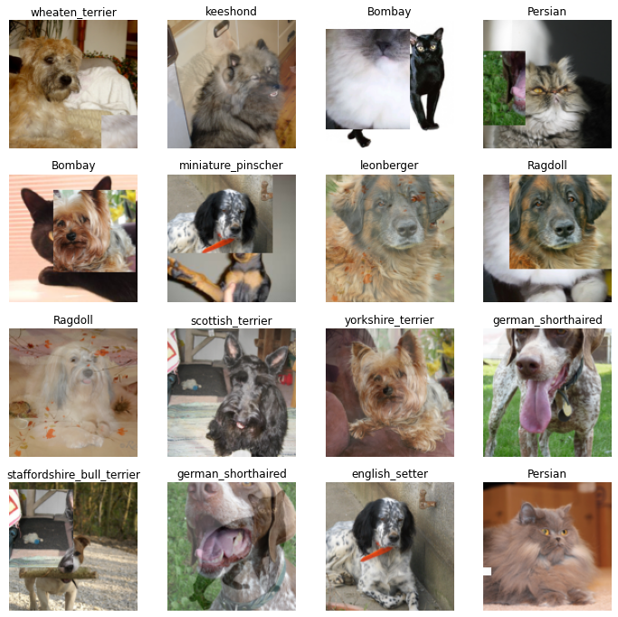
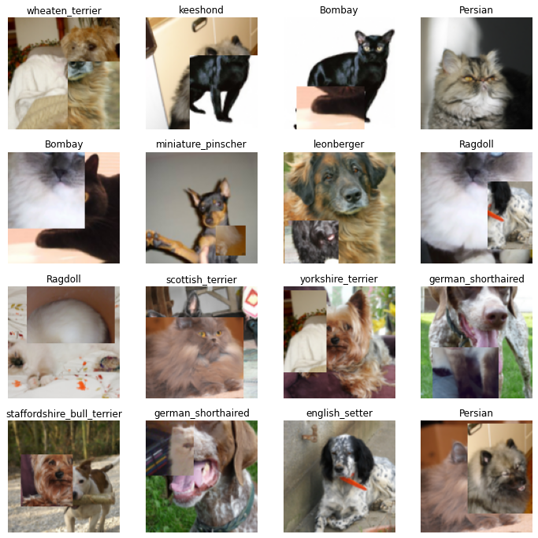
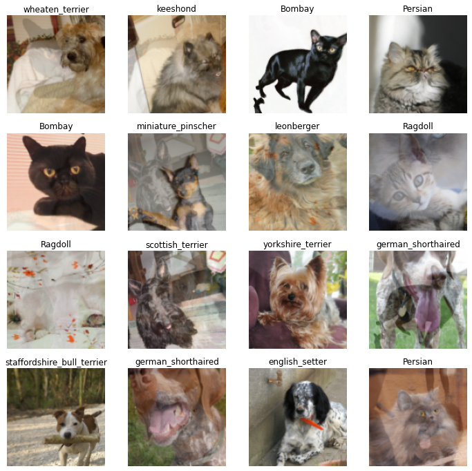
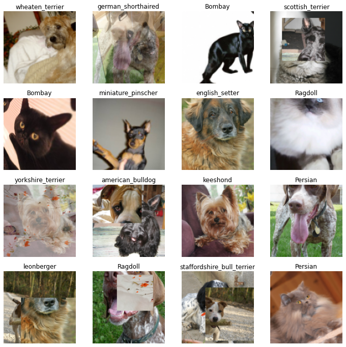
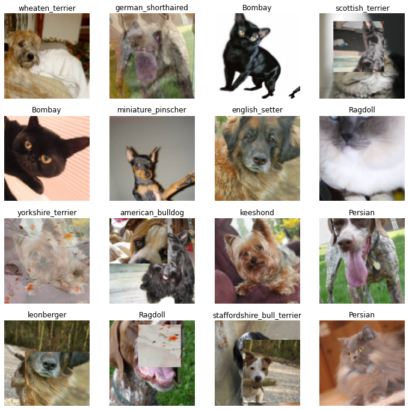

with less_random():
cutmix = CutMixUp(cutmix_ratio=1, mixup_ratio=0, element=False)
test_cutmixup(cutmix)
fastxtend replaces fastai.callback.mixup.MixUp and fastai.callback.mixup.CutMix with backwards compatible versions that support optional training with MultiLoss via MixHandlerX.
CutMixUp and CutMixUpAugment allow applying MixUp, CutMix, and Augmentations using one callback. Optionally element-wise on the same batch.
MixUp (alpha:float=0.4, interp_label:bool|None=None)
Implementation of https://arxiv.org/abs/1710.09412. Supports MultiLoss
| Type | Default | Details | |
|---|---|---|---|
| alpha | float | 0.4 | Alpha & beta parametrization for Beta distribution |
| interp_label | bool | None | None | Blend or stack labels. Defaults to loss’ y_int if None |
CutMix (alpha:float=1.0, uniform:bool=True, interp_label:bool|None=None)
Implementation of https://arxiv.org/abs/1905.04899. Supports MultiLoss
| Type | Default | Details | |
|---|---|---|---|
| alpha | float | 1.0 | Alpha & beta parametrization for Beta distribution |
| uniform | bool | True | Uniform patches across batch. True matches fastai CutMix |
| interp_label | bool | None | None | Blend or stack labels. Defaults to loss’ y_int if None |
CutMixUp (mix_alpha:float=0.4, cut_alpha:float=1.0, mixup_ratio:Numeric=1, cutmix_ratio:Numeric=1, cutmix_uniform:bool=True, element:bool=True, interp_label:bool|None=None)
Combo implementation of https://arxiv.org/abs/1710.09412 and https://arxiv.org/abs/1905.04899
Supports element-wise application of MixUp and CutMix on a batch.
| Type | Default | Details | |
|---|---|---|---|
| mix_alpha | float | 0.4 | MixUp alpha & beta parametrization for Beta distribution |
| cut_alpha | float | 1.0 | CutMix alpha & beta parametrization for Beta distribution |
| mixup_ratio | Numeric | 1 | Ratio to apply MixUp relative to CutMix |
| cutmix_ratio | Numeric | 1 | Ratio to apply CutMix relative to MixUp |
| cutmix_uniform | bool | True | Uniform patches across batch. True matches fastai CutMix |
| element | bool | True | Apply element-wise MixUp and CutMix on a batch |
| interp_label | bool | None | None | Blend or stack labels. Defaults to loss’ y_int if None |
CutMixUpAugment (mix_alpha:float=0.4, cut_alpha:float=1.0, mixup_ratio:Numeric=1, cutmix_ratio:Numeric=1, augment_ratio:Numeric=1, augment_finetune:Numeric|None=None, cutmix_uniform:bool=True, cutmixup_augs:Listified[Transf orm|Callable[...,Transform]]|None=None, element:bool=True, interp_label:bool|None=None)
Combo implementation of https://arxiv.org/abs/1710.09412 and https://arxiv.org/abs/1905.04899 plus Augmentation.
Supports element-wise application of MixUp, CutMix, and Augmentation on a batch.
Pulls augmentations from Dataloaders.train.after_batch. These augmentations are not applied when performing MixUp & CutMix, the frequency is controlled by augment_ratio.
Use augment_finetune to only apply dataloader augmentations at the end of training for augment_finetune epochs or percent of training.
cutmixup_augs are an optional separate set of augmentations to apply with MixUp and CutMix. Usually these should be less intensive then the dataloader augmentations.
| Type | Default | Details | |
|---|---|---|---|
| mix_alpha | float | 0.4 | MixUp alpha & beta parametrization for Beta distribution |
| cut_alpha | float | 1.0 | CutMix alpha & beta parametrization for Beta distribution |
| mixup_ratio | Numeric | 1 | Ratio to apply MixUp relative to CutMix & augmentations |
| cutmix_ratio | Numeric | 1 | Ratio to apply CutMix relative to MixUp & augmentations |
| augment_ratio | Numeric | 1 | Ratio to apply augmentations relative to MixUp & CutMix |
| augment_finetune | Numeric | None | None | Number of epochs or percent of training to only apply dataloader augmentations |
| cutmix_uniform | bool | True | Uniform patches across batch. True matches fastai CutMix |
| cutmixup_augs | Listified[Transform | Callable[…, Transform]] | None | None | Augmentations to apply before MixUp & CutMix. Should not have Normalize |
| element | bool | True | Apply element-wise MixUp, CutMix, and Augment on a batch |
| interp_label | bool | None | None | Blend or stack labels. Defaults to loss’ y_int if None |
CutMix with uniform cuts
with less_random():
cutmix = CutMixUp(cutmix_ratio=1, mixup_ratio=0, element=False)
test_cutmixup(cutmix)
CutMix with random cuts
with less_random():
cutmix = CutMixUp(cutmix_ratio=1, mixup_ratio=0, cutmix_uniform=False, element=False)
test_cutmixup(cutmix)
MixUp
with less_random():
mixup = CutMixUp(mix_alpha=1., cutmix_ratio=0, mixup_ratio=1, element=False)
test_cutmixup(mixup)
CutMix and MixUp on the same batch
with less_random():
mixup = CutMixUp(mix_alpha=1., cutmix_ratio=1, mixup_ratio=1)
test_cutmixup(mixup)
CutMix with weak augmentations
with less_random():
cutmix = CutMixUpAugment(cutmix_ratio=1, mixup_ratio=0, augment_ratio=0, cutmix_uniform=False,
cutmixup_augs=aug_transforms(size=112, max_warp=0.1, max_lighting=0.1),
element=False)
test_cutmixup(cutmix, True, size=112)
MixUp with weak augmentations
with less_random():
mixup = CutMixUpAugment(mix_alpha=1., cutmix_ratio=0, mixup_ratio=1, augment_ratio=0,
cutmixup_augs=aug_transforms(max_rotate=20),
element=False)
test_cutmixup(mixup, True)
Just the strong Augmentations
with less_random():
augment = CutMixUpAugment(cutmix_ratio=0, mixup_ratio=0, augment_ratio=1, element=False)
test_cutmixup(augment, True)
Mixup, CutMix, and strong Augmentations on the same batch
with less_random():
batch = CutMixUpAugment(mix_alpha=1., cutmix_ratio=1, mixup_ratio=1, augment_ratio=1, cutmix_uniform=False)
test_cutmixup(batch, True)
Mixup and CutMix with weak augmentations and strong Augmentations on the same batch
with less_random():
batch = CutMixUpAugment(mix_alpha=1., cutmix_ratio=1, mixup_ratio=1, augment_ratio=1,
cutmix_uniform=False, cutmixup_augs=aug_transforms(max_rotate=20))
test_cutmixup(batch, True)